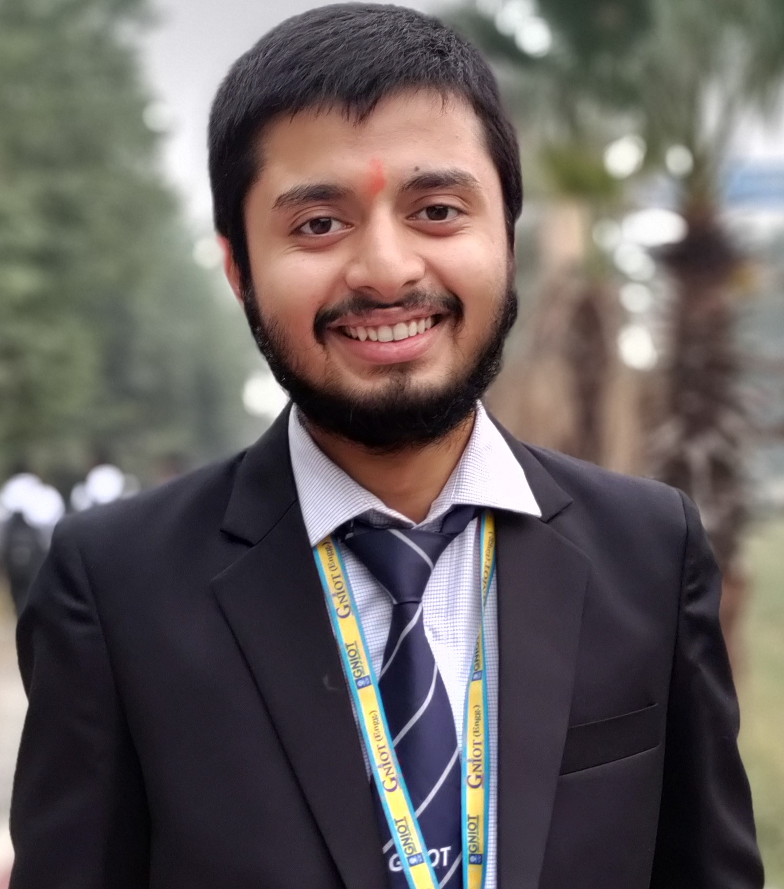

Ritik Sharma

Ph.No :9718151312
Email : sharmaeritik21112000@gmail.com
Objective
A passionate and self-motivated B.Tech student with a keen interest in upskilling in web development. Possess a strong understanding of data structures and algorithms (DSA) using C/C++, with a solid foundation in efficient coding practices. Seeking a challenging role to leverage my skills in software development and contribute to a dynamic and growth-oriented organization.
Eduational
B.Tech in Computer Science (IoT)
Greater Noida Institute of Technology , Greater Noida CGPA: 6.6 (2022 - 2025)
Diploma in Chemical Engineering (BTE)
Guru Nanak Dev Institute of Technology CGPA:7.4 (2018 - 2021)
Technical Skills
- Programming Languages : C & C++
- Concpets : OOPs(Object Oriented Programming) , DSA (Data Structure And Alogorithim)
- Tools And Platform : VS code, Dev C++, Figma
- Soft Skills :Problem Solving, Quick Learner, Communication, Team Collaboration
Projects
Sun Tracking Solar Panel - IOT Based
- Developed an IoT-based Sun Tracking Solar Panel System using Arduino Uno and stepper motors to achieve
precise solar panel positioning without relying on light sensors.
- Enhanced solar energy absorption by optimizing the panel’s orientation based on the sun’s position
through�out the day.
Arduino-Based Alcohol Detection System for vehicles
- Secured 1st place at the Project Exhibition Event on November 2, 2023, for developing an innovative alcohol detection system designed to enhance vehicle safety
- Demonstrated strong capabilities in technical problem-solving.
Achievements
- Awarded 1st place at the Project Exhibition Event on November 2, 2023, for developing an innovative Arduino-based alcohol detection system for vehicles, showcasing technical expertise and problem-solving skills.
- Earned a 3-star rating in C and a 3-star rating in C++ on HackerRank, demonstrating strong proficiency fin both programming languages and problem-solving abilities.
Extracurricular Activities
- As Coordinator of the IoT Elite Club, I organized and managed workshops and coding events, facilitating hands-on learning and skill development for members.
Hobbies And Interests
- Participating in coding challenges and hackathons to improve problem-solving skills.
- Practicing meditation and mindfulness for stress management.